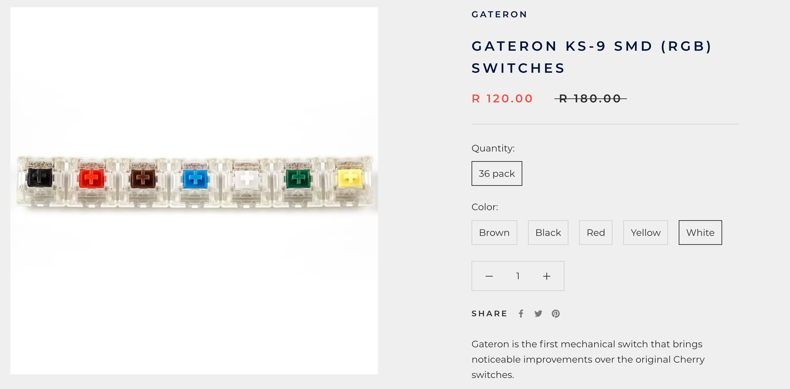
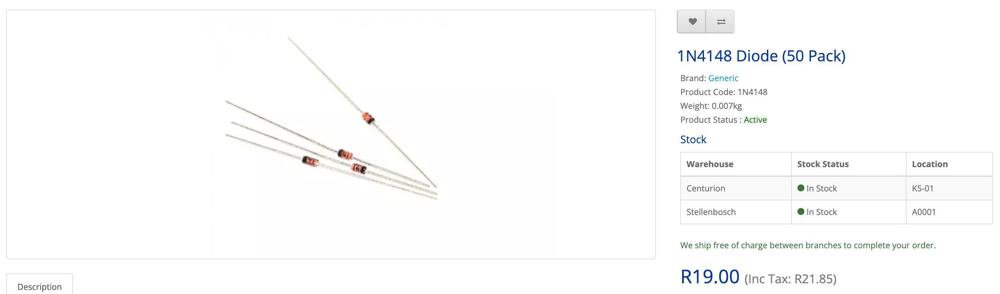
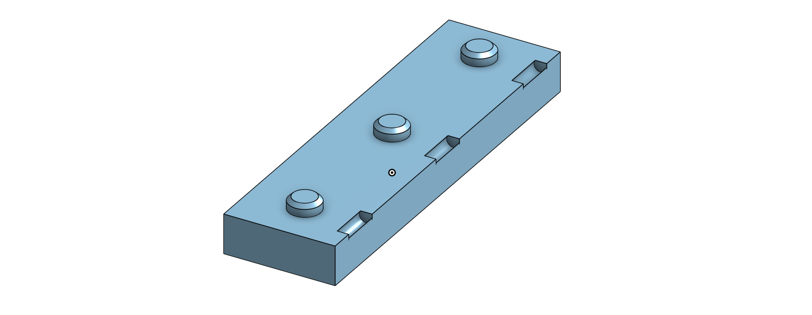
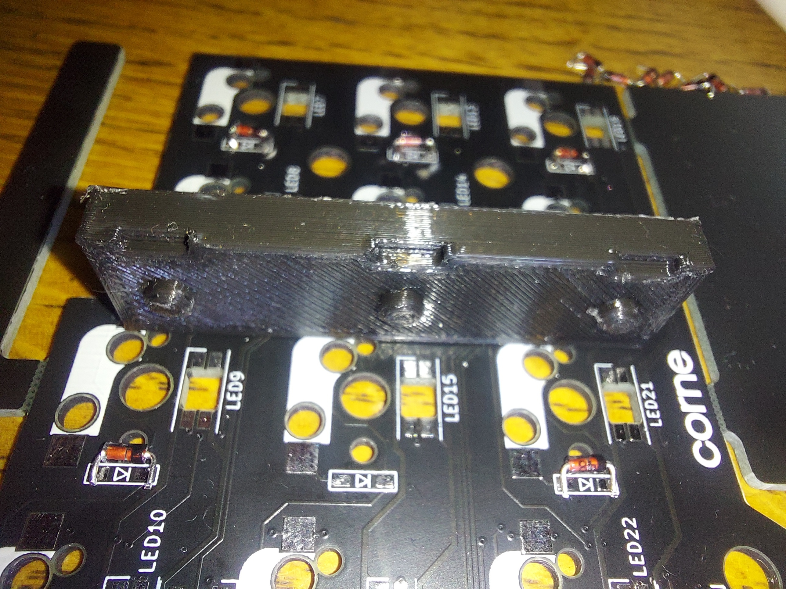
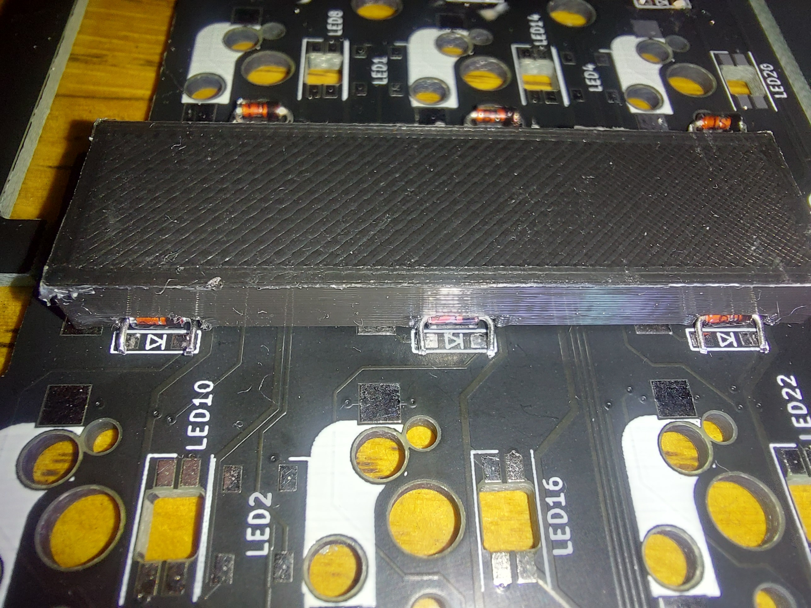
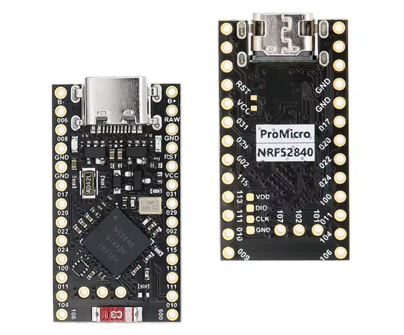
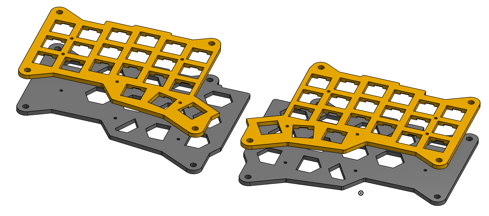
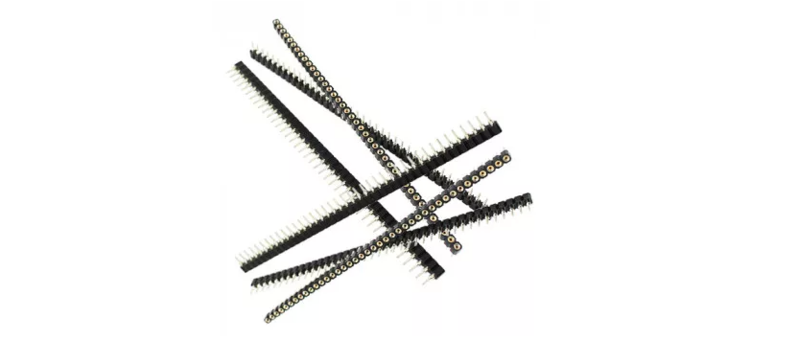

I have some spare keyboard parts from previous builds which I'm selling as "starter kits".
This is ideal to get started with building your own keyboards since the main barrier to entry is usually shipping and minimum order QTYs which this should help with. I'm including the sockets and aux connectors since they are the most tricky components to source in SA. For the rest, I've included some resources at the bottom of the page.
Contact me on Facebook Marketplace if you are interested (links below).
--- Corne V3 ---
- 2x PCBs
- 50x MX sockets
- 2x PJ320A Aux connectors
For R500 a set (4 left)
--- Corne V4 ---
- 2x PCBs (with RP2040 MCUs soldered on!)
- 50x MX sockets
- 2x PJ399A Aux connectors
- 2x USB connectors
For R1000 a set (will have 3 extra)
Where can I get the rest?
www.ctrlshiftesc.co.za is great for the switches. Their keycaps are overpriced IMO. Temu has a wide selection of keykaps at good prices. e.g. 
Diodes (needed for v3 only) you can get from
MicroRobotics. I went for the
1N4148
since they are more robust, but require some soldering prowes. If
you rather want the SMD diodes, you can get them from MicroRobotics
too.

NB: Soldering the diodes requires
patience and finesse.
It is possible to break the pads on the PCB if you are rough with
them. So practice your soldering and take your time.
I've designed a solder jig for the diodes to hold them in place. You
can find it
here
on OnShape to print. (See solder hints below).



The final result.

The micro-controllers (needed for v3 only) you can also get from MicroRobotics. Recently, they got the NRF52840 which is great since you can run ZMK on it! I also have 10 spare which I bulk ordered. You can get from me for the same price as Microrobotics. The 8-bit ProMicro works fine too if you can source it. You can run QMK on it. 
For the plates and base, I've modified a community design on OnShape to fit my needs which you can find here to 3D print yourself. But there are lots of models available on Thingiverse and Printables. 
I stronly recommend using round headers for the microcontrollers rather than soldering it directly to the PCB. Unfortunately, MicroRobotics have been out of stock for a while now. You can help by pinging them to get more. (If you can find some locally, please let me know). 
This guide is pretty accurate regarding the soldering.
Hints:
- Start with the diodes!
- Solder the sockets with the switches pressed in from the other side. This helps keep them in place.
Motivation
Building these keyboards has been a ton of fun, especially when done as a group-buy with friends. Beyond the enjoyment, it has significantly enriched my career as a Software Engineer by challenging my perspectives on tools and workflows.
I'm selling these spare kits as an experiment to gauge whether the interest in them extends beyond my circle of friends. If it does, I'm considering formally selling the kits as a way to share the love in South Africa.
To avoid wasting my time, I'll only pursue this if I have real evidence of demand. So if you're interested and want to show your support, vote with your wallet and buy me a coffee!
You can read more about my journey with split keyboards here.